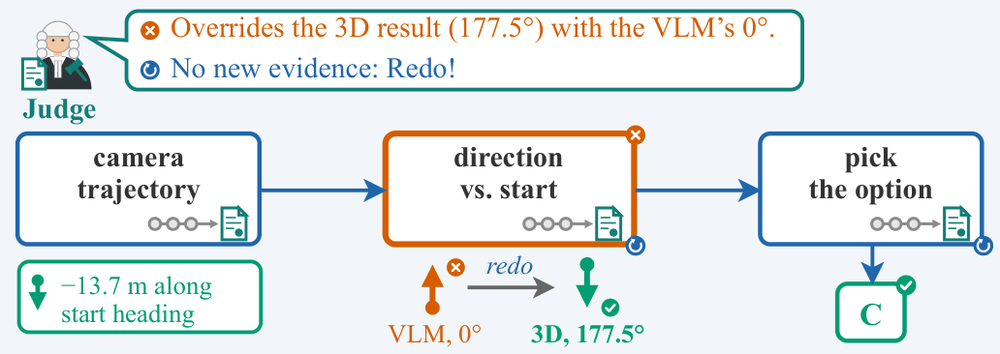

CoTA
“… the camera advances along the track, following the skier. … indicating forward motion.”
SpatialClawA
Forward component: -9.5802 mDominant motion direction: BACKWARD- “… but this seems counterintuitive for a camera following a skier forward.”
- VLM: “The camera is moving forward.”
SpaDAGbase plannerC

- n2first pass
Angle between displacement and initial forward: 177.50 degreesTrusting VLM and visual evidence: motion is FORWARD.Returns 0.0. - Judgereviews n2“Overrides geometric result (177.5°) with VLM result (0.0°) without new evidence or coordinate validation.”
- n2redo
Geometric angle: 177.5°